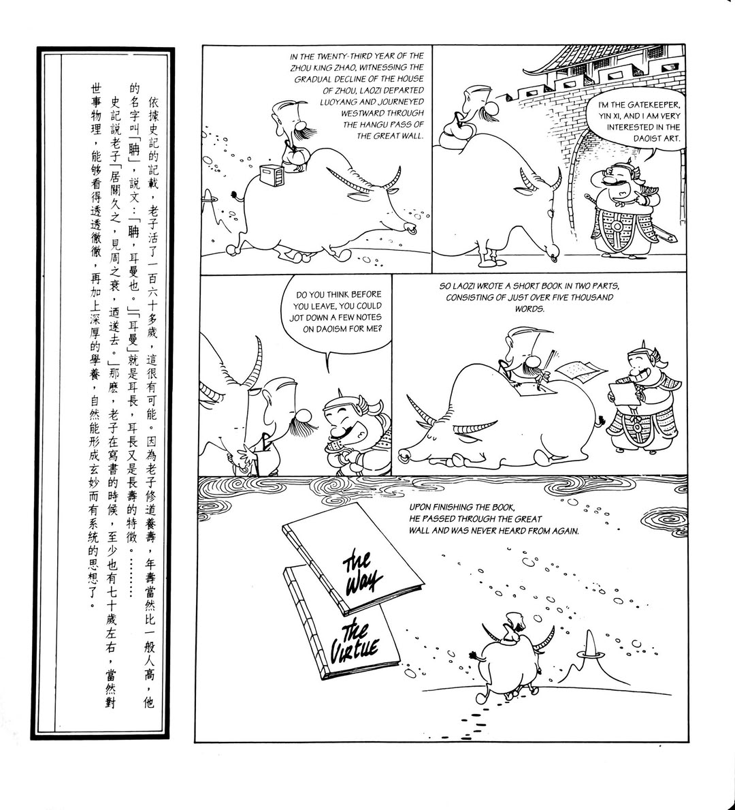

Reading the Dao De Jing with
อ่านเต้าเต๋อจิงกับ
和農博士一起读道德经
The complete Dao De Jing 道德經 (dào dé jīng) by Laozi 老子 (lǎo zǐ) — in Wang Bi Chinese, Hemingway-clear English, and Thai. Every Chinese character with its pinyin and meaning. Read one chapter a day, or all at once — and pick up Chinese while you're at it. The book is not impatient.
เต้าเต๋อจิง 道德經 (dào dé jīng) ฉบับสมบูรณ์ของเหล่าจื๊อ 老子 (lǎo zǐ) — ในภาษาจีนฉบับหวังปี้ ภาษาอังกฤษที่ชัดเจน และภาษาไทย ทุกตัวอักษรจีนมีพินอินกำกับและความหมายอธิบาย อ่านวันละบทหรือทั้งหมดในคราวเดียว — และเรียนภาษาจีนไปพร้อมกัน หนังสือเล่มนี้ไม่รีบ
老子《道德经》王弼注本全文 — 中文原文、海明威式清晰的英文、以及泰文，三语并列。每个汉字都带拼音和释义。每天读一章，或者一口气读完 — 顺便学点中文。这本书不着急。
Each chapter unfolds in up to six panels: แต่ละบทแบ่งเป็นสูงสุดหกช่วง: 每章最多分为六个部分：
01 Originต้นฉบับ原文 · 原文 yuán wén · 02 Directแปลตรง直译 · 直譯 zhí yì · 03 Readingตีความ解读 · 解讀 jiě dú · 04 Code · 程式 chéng shì · 05 Noteบันทึก注 · 注 zhù · 06 Playเล่น玩 · 玩 wán
↓ beginเริ่ม开始 ← → turn pagesพลิกหน้า翻页 ≡ chaptersสารบัญ目录 L EN ⇄ 中文 ⇄ TH P 拼音 pinyin N 注 notesบันทึก笔记
A Note Before We Begin
หมายเหตุก่อนเริ่มอ่าน
开卷之前
For more than a hundred days I wrote about my life, and the longer I wrote, the more clearly I noticed the same book was answering me. The book is the Dao De Jing. It was completed somewhere around the fourth century BCE, in eighty-one short chapters and roughly five thousand Chinese characters. It is the second-most-translated book in the world after the Bible. It is also the most-mistranslated.
ผมเขียนเกี่ยวกับชีวิตของตัวเองมากกว่าร้อยวัน และยิ่งเขียนนาน ผมก็ยิ่งเห็นชัดว่ามีหนังสือเล่มหนึ่งที่คอยตอบสิ่งที่กำลังเขียนถึงอยู่เสมอ หนังสือนั้นคือ เต้าเต๋อจิง มันถูกเขียนขึ้นราวศตวรรษที่สี่ก่อนคริสตกาล ในแปดสิบเอ็ดบทสั้น ๆ และตัวอักษรจีนราวห้าพันตัว เป็นหนังสือที่ถูกแปลมากที่สุดในโลกรองจากพระคัมภีร์ไบเบิล และยังเป็นหนังสือที่ถูกแปลผิดมากที่สุดด้วย
我写了一百多天关于自己生活的文字，写得越久，越清楚地发现同一本书在回应我。那本书就是《道德经》。它大约完成于公元前四世纪，八十一篇短章，约五千汉字。它是世界上被翻译得第二多的书，仅次于《圣经》。它也是被误译得最多的书。
Most translations turn it into a poem about mist. The original is not about mist. It is about a person trying to live well. The translator's job is to read it for that person — not for the mist.
ฉบับแปลส่วนใหญ่ทำให้มันกลายเป็นบทกวีเกี่ยวกับหมอก แต่ต้นฉบับไม่ใช่เรื่องของหมอก มันพูดถึงคนที่พยายามจะมีชีวิตที่ดี หน้าที่ของผู้แปลคืออ่านมันเพื่อคนคนนั้น ไม่ใช่เพื่อหมอก
大多数译本把它变成了关于雾的诗。但原文不是关于雾的。它是关于一个人如何好好活着。翻译者的任务是为那个人读这本书——不是为了雾。
This translation aims at understanding, not poetry. The sentences are short. The metaphors are kept where they earn their keep. Where I have a story from my own life that fits the chapter, I tell it. Where I don't, I shut up.
ฉบับแปลนี้มุ่งสู่ความเข้าใจ ไม่ใช่บทกวี ประโยคสั้น อุปมาอุปไมยอยู่เฉพาะที่มันสมควรอยู่ ถ้าผมมีเรื่องจากชีวิตตัวเองที่เหมาะกับบทนั้น ผมก็เล่า ถ้าไม่มี ผมก็หยุด
这个译本追求的是理解，不是诗意。句子很短。隐喻只在它们值得存在的地方保留。如果我有适合这一章的个人故事，我就讲。没有，我就闭嘴。
Each chapter starts with the Chinese — Wang Bi's text, every character with its pinyin on top and a literal translation on the bottom. Read the Chinese aloud, syllable by syllable, the way a Chinese child first reads it. The translation is there to nudge, not to replace. After the Chinese comes Direct 直譯 (a faithfully strange literal), Reading 解讀 (what I think the chapter is doing, with the science that supports it), Code 程式 (a TypeScript distillation, because some claims compress better as a function signature), Note 注 (a remark from my life), and sometimes Play 玩 (a what-if, a game, a Slingerland aside).
แต่ละบทเริ่มต้นด้วยภาษาจีน — ข้อความของหวังปี้ ทุกตัวอักษรมีพินอินกำกับไว้ข้างบนและคำแปลตรง ๆ อยู่ด้านล่าง อ่านภาษาจีนออกเสียง ทีละพยางค์ แบบเดียวกับที่เด็กจีนหัดอ่านครั้งแรก คำแปลมีไว้เพื่อช่วย ไม่ใช่แทนที่ ตามมาด้วย ฉบับตรง 直譯 ฉบับตีความ 解讀 ที่ผมคิดว่าบทนั้นกำลังทำอะไร พร้อมหลักฐานทางวิทยาศาสตร์ที่รองรับ โค้ด 程式 บันทึก 注 จากชีวิตของผม และบางครั้ง กิจกรรม 玩
每章以中文开始——王弼注本，每个字上方标拼音，下方附直译。大声朗读中文，一个字一个字地读，像中国孩子第一次读书那样。翻译是用来轻轻推你一把的，不是来替代的。中文之后是直译（忠实地奇怪的字面翻译）、解读（我认为这一章在做什么，以及支持它的科学）、代码（TypeScript 提炼，因为有些论断用函数签名压缩得更好）、注（我生活中的一句 remarks），以及有时候玩（一个 what-if、一个游戏、一段 Slingerland 的旁白）。
The book is trilingual on purpose: English, Thai, Chinese are all first-class. Toggle L for EN ⇄ TH; toggle P to hide pinyin once you have outgrown it. Press N for my optional notes — about me, about how Daoism met Buddhism, about what living Daoists actually argue about. The notes are a sidebar; the chapters are the book.
หนังสือเล่มนี้ตั้งใจให้เป็นสามภาษา — อังกฤษ ไทย จีน ล้วนเป็นภาษาหลักเท่า ๆ กัน กด L เพื่อสลับระหว่างอังกฤษกับไทย กด P เพื่อซ่อนพินอินเมื่อไม่ต้องการแล้ว กด N เพื่อเปิดบันทึกสำรองของผม — เกี่ยวกับตัวผม เกี่ยวกับที่มาที่ไปของเต๋าและพุทธ เกี่ยวกับสิ่งที่ชาวเต๋าจริง ๆ ถกเถียงกันอยู่ บันทึกเหล่านั้นเป็นเพียงข้อมูลเสริม บทในหนังสือต่างหากที่คือหัวใจ
这本书是故意的三语并置：英文、泰文、中文都是第一等的语言。按 L 切换语言；按 P 在你不再需要拼音时隐藏它。按 N 打开我的可选笔记——关于我、关于道教如何遇见佛教、关于活着的道家学者真正在争论什么。笔记是旁白；章节才是书本身。
This is the most important book I have read more than ten times. Some chapters I have read more than a hundred. They get clearer every time, and clearer is not the same as easier.
นี่คือหนังสือที่สำคัญที่สุดที่ผมอ่านมาแล้วมากกว่าสิบรอบ บางบทมากกว่าร้อยรอบ มันชัดขึ้นทุกครั้งที่อ่าน และชัดขึ้นไม่ได้แปลว่าง่ายขึ้น
这是我读过十遍以上最重要的书。有些章节读过一百遍以上。每一次都变得更清楚，而清楚不等于容易。
— Non · Bangkok · Shanghai · Boston · 2026
楔子·壹 xiē zǐ · yī · Act One — the Departureบทที่หนึ่ง — การจากไป第一幕 — 出走
This is — pretty much — the most important scene in philosophy of all time.
นี่คือ — ค่อนข้างแน่ ๆ — ฉากที่สำคัญที่สุดในประวัติศาสตร์ปรัชญาของมนุษยชาติ
这——差不多——是人类哲学史上最重要的场景。

Around the 6th century BCE, in the twenty-third year of the Zhou King Zhao 周昭王 zhōu zhāo wáng, an old librarian watched the kingdom decline. He had been the keeper of the royal archives in Luoyang 洛陽 luò yáng — the capital of the Zhou. He read everything. He spoke very little.
His name we do not know. "Lao Tzu" 老子 means "Old Master" — the title zi 子 was reserved for teachers; lao 老 for elders. Many scholars now believe the book was compiled over generations rather than dictated by a single person. The man on the buffalo is a story we agreed to keep.
The story goes: he packed his few things, climbed onto a water buffalo, and rode west — to leave civilization behind. At the Hangu Pass 函谷關 hán gǔ guān, in the Great Wall, the gatekeeper Yin Xi 尹喜 yǐn xǐ stopped him: "Do you think before you leave, you could jot down a few notes on Daoism for me?"
The old man did not refuse. He sat down. He wrote 81 short chapters, about 5,000 Chinese characters in total — a book in two parts: the first 37 chapters about the Way 道 dào, the next 44 chapters about Virtue 德 dé. He handed the scroll to the gatekeeper, climbed back on his buffalo, passed through the Great Wall, and was never seen again.
That scroll is the Dao De Jing 道德經 dào dé jīng. Two books, bound as one, in the order one writes them. It is the book in your hand right now. Two thousand five hundred years separate you from Yin Xi the gatekeeper — and you are about to read exactly what he read.
大约公元前六世纪，周昭王二十三年，一位老图书馆员看着王国衰落。他曾是洛阳周王室藏书室的看守。他读过所有东西。他很少说话。
我们不知道他的名字。「老子」的意思是「老老师」——子是老师的尊称；老是对长者的称呼。现在许多学者相信这本书是几代人编纂的，而不是一个人口述的。骑牛的老人是一个我们约定保留的故事。
故事说：他收拾了几样东西，骑上青牛，向西而去——离开文明。在函谷关，长城的关口，守关人尹喜拦住了他：「您走之前，能不能把关于道的东西写一点给我？」
老人没有拒绝。他坐下来。写了八十一篇短章，总共约五千汉字——一本书分两部分：前三十七章讲道，后四十四章讲德。他把卷轴交给守关人，重新骑上青牛，穿过长城，再也没有人见过他。
那卷轴就是《道德经》。两本书，合为一本，按写的顺序排列。就是你手上这本书。你和守关人尹喜之间隔着两千五百年——而你即将读到他读过的完全一样的内容。
ราว ๆ ศตวรรษที่ 6 ก่อนคริสตกาล ในปีที่ยี่สิบสามของรัชสมัยพระเจ้าโจวเจาหวัง 周昭王 zhōu zhāo wáng มีชายแก่คนหนึ่งเฝ้าดูอาณาจักรที่ตนรับใช้ค่อย ๆ เสื่อมลง เขาเป็นบรรณารักษ์หลวงของหอจดหมายเหตุในเมืองลั่วหยาง 洛陽 luò yáng นครหลวงของราชวงศ์โจว เขาอ่านทุกอย่าง พูดน้อยมาก
ชื่อจริงของเขาไม่มีใครรู้ คำว่า "เหล่าจื๊อ" 老子 แปลว่า "ปรมาจารย์ผู้สูงวัย" — คำว่า จื่อ 子 ใช้สำหรับครู ส่วน เหล่า 老 ใช้สำหรับผู้อาวุโส นักวิชาการสมัยใหม่จำนวนไม่น้อยเชื่อว่าหนังสือเล่มนี้ถูกเขียนและรวบรวมขึ้นข้ามหลายชั่วอายุคน ไม่ได้มาจากคนเพียงคนเดียว ภาพชายแก่ขี่ควายจึงเป็นเรื่องเล่าที่เราตกลงกันว่าจะรักษาไว้
ตามตำนาน วันหนึ่งเขาเก็บของสองสามอย่าง ขึ้นหลังควาย แล้วขี่มุ่งหน้าไปทางทิศตะวันตก — เพื่อทิ้งอารยธรรมไว้ข้างหลัง เมื่อมาถึงด่านหานกู่กวน 函谷關 hán gǔ guān ตรงกำแพงเมืองจีน ผู้รักษาด่านชื่ออิ๋นสี 尹喜 yǐn xǐ หยุดเขาไว้และพูดว่า "ก่อนที่ท่านจะจากไป ท่านพอจะบันทึกสิ่งที่ท่านรู้เกี่ยวกับเต๋าให้ข้าได้สักหน่อยไหม?"
ชายแก่ไม่ปฏิเสธ เขานั่งลงเขียน 81 บทสั้น ๆ รวมประมาณ 5,000 ตัวอักษรจีน — เป็นหนังสือสองเล่มในเล่มเดียว 37 บทแรกว่าด้วย ทาง 道 dào และอีก 44 บทถัดมาว่าด้วย คุณธรรม 德 dé เสร็จแล้วเขามอบม้วนให้ผู้รักษาด่าน ขึ้นหลังควาย เดินผ่านกำแพงเมืองจีนออกไป และไม่มีใครได้เห็นเขาอีกเลย
ม้วนนั้นคือ เต้าเต๋อจิง 道德經 dào dé jīng สองเล่มในเล่มเดียว ตามลำดับที่ผู้เขียนเขียนมัน — คือหนังสือที่อยู่ในมือคุณตอนนี้ สองพันห้าร้อยปีคั่นกลางระหว่างคุณกับอิ๋นสีผู้รักษาด่าน และคุณกำลังจะได้อ่านสิ่งเดียวกันกับที่เขาได้อ่าน
楔子·貳 xiē zǐ · èr · Act Two — Two Thousand Five Hundred Years Laterบทที่สอง — สองพันห้าร้อยปีต่อมา第二幕 — 两千五百年后
The book travelled. It travelled across the Han dynasty and survived the burning of the books. It travelled into Wang Bi's 王弼 wáng bì hands — a 23-year-old in the third century CE who wrote the standard commentary the world still reads, and died at 24. It travelled into the Buddhism that arrived from India in the same century, and the translators reached for its vocabulary because they had no Chinese word for sunyata (emptiness) and so they used 無 wú — Lao Tzu's word for non-being. Buddhism in China was learned through Daoist clothes; Chan 禪 chán (which became Zen) was the result.
It travelled across emperors and dynasties, into Korean Seon and Japanese Zen and Vietnamese Thiền. It travelled into Wang Yangming's neo-Confucianism, into the Quanzhen 全真 quán zhēn monasteries, into village funerals at the edge of every Chinese-speaking community. It travelled into Hokusai's brush and Tsai Chih-chung's pen. It became, after the Bible, the most-translated book in the world.
And it travelled here. To this page. To your phone, on your commute, on whatever evening this is. You are now Yin Xi the gatekeeper. The Old Master is about to ride past you, west, and he is going to leave you a book.
这本书在旅行。它穿越汉朝，在焚书坑儒中幸存。它进入王弼的手中——公元三世纪的一个二十三岁年轻人，写下了世界至今仍在读的标准注释，然后在二十四岁去世。它进入同一世纪从印度传来的佛教，译经者借用它的词汇，因为中文里没有śūnyatā（空性）这个词，于是他们用了無——老子的「无」。中国佛教穿着道家的衣服被学习；禅宗（后来成为日本的 Zen）就是结果。
它穿越皇帝和王朝，进入韩国禅宗和日本禅、越南禅。它进入王阳明的新儒家，进入全真道的道观，进入每个中文社区边缘的乡村葬礼。它进入葛饰北斋的笔和蔡志忠的钢笔。它成为仅次于《圣经》的被翻译最多的书。
而它旅行到了这里。到了这一页。到了你的手机上，在你通勤的路上，在这个无论是什么样的夜晚。你现在就是守关人尹喜。老人即将骑牛从你面前经过，向西，而他将留给你一本书。
หนังสือเล่มนี้เดินทาง มันข้ามราชวงศ์ฮั่น รอดพ้นจากการเผาตำรา และเดินทางไปสู่มือของหวังปี้ 王弼 wáng bì — เด็กหนุ่มอายุ 23 ในศตวรรษที่ 3 ผู้เขียนอรรถาธิบายฉบับมาตรฐานที่โลกยังอ่านอยู่ทุกวันนี้ และเสียชีวิตในวัย 24 มันเดินทางไปสู่พุทธศาสนาที่เพิ่งมาถึงจีนจากอินเดียในศตวรรษเดียวกัน — และผู้แปลตำราพุทธก็หยิบยืมคำของเหล่าจื๊อ เพราะภาษาจีนยังไม่มีคำสำหรับ สุญญตา (ความว่าง) จึงใช้คำว่า 無 wú — \"ไม่มี\" ของเหล่าจื๊อแทน พุทธศาสนาแบบจีนจึงถูกเรียนผ่านเสื้อผ้าเต๋า และนิกาย 禪 chán (ซึ่งต่อมากลายเป็น \"เซน\" ในญี่ปุ่น) คือผลจากการสวมเสื้อนั้น
มันเดินทางผ่านจักรพรรดิและราชวงศ์ ผ่านไปยังเซนเกาหลี (ซอน) เซนญี่ปุ่น เซนเวียดนาม (เถี่ยน) ผ่านขงจื๊อใหม่ของหวังหยางหมิง ผ่านเข้าสู่อารามฉวนเจิน 全真 quán zhēn ผ่านงานศพในหมู่บ้านชายขอบของชุมชนจีนทุกแห่ง ผ่านพู่กันของโฮกุไซ และปลายปากกาของไช่จื๋อจง สุดท้ายมันกลายเป็นหนังสือที่ถูกแปลมากที่สุดเป็นอันดับสอง รองจากพระคัมภีร์
และมันก็เดินทางมาถึงตรงนี้ ถึงหน้านี้ ถึงโทรศัพท์ของคุณ ระหว่างคุณเดินทางกลับบ้าน หรือเย็นวันใดก็ตาม ตอนนี้คุณคืออิ๋นสี ผู้รักษาด่าน ปรมาจารย์ผู้สูงวัยกำลังจะขี่ควายผ่านคุณไปทางตะวันตก และเขากำลังจะมอบหนังสือให้คุณ
楔子·叁 xiē zǐ · sān · Act Three — Civilization and its Discontentsบทที่สาม — อารยธรรมและความไม่เป็นสุข第三幕 — 文明及其不满
Look at the world the Old Master fled. The Zhou kingdom was an information-rich, status-driven, increasingly performative society. Sharp swords on belts, fancy clothes with embroidered designs, courts full of careful protocol, granaries empty in the countryside. Lao Tzu's diagnosis was not "things are bad" — it was something more pointed: civilization had begun confusing its signals for its substance.
What was lost was not values; it was contact. Contact with what is so of itself — 自然 zì rán, the Daoist word for "nature" that literally means "self-so." The Way had not gone anywhere. The Old Master's claim is gentler and more devastating: we left the Way. We are still defining ourselves by what we own, what we wear, what we are seen wanting. We mistook the lit dashboard for the road.
This is — and here you can hear Freud's Civilization and Its Discontents from across the centuries — the original diagnosis of the discontent. We are uncomfortable in a civilization we built to make us comfortable. We feel the gap. We name it stress, burnout, anxiety, the meaning crisis. The Old Master called it leaving the mother — leaving the source that fed us before we could name food.
This book is the gift the gatekeeper kept handing forward. It is not a system. It is not a religion (though one grew around it). It is a quiet correction, written by someone leaving the city, given to someone who would not. You are the someone who would not. That is exactly the right person to read it.
看看老人逃离的世界。周朝是一个信息丰富、地位驱动、越来越表演化的社会。腰带上挂着锋利的剑，衣服上有刺绣的花纹，宫廷里满是小心翼翼的礼仪，而乡下的粮仓却空空如也。老子的诊断不是「事情很糟」——它更尖锐：文明开始把它的信号和它的实质搞混了。
失去的不是价值观；失去的是接触。接触那个本来就是的东西——自然，道家对「自然」的说法，字面意思就是「自己如此」。道没有离开任何地方。老人的说法更温和，也更 devastating：是我们离开了道。我们仍然在通过我们拥有的东西、我们穿的衣服、我们被看见想要的东西来定义自己。我们误把亮着的仪表盘当成了路。
这——在这里你可以听到弗洛伊德的《文明及其不满》跨越世纪的回响——是对不满的原始诊断。我们在我们为了让自己舒适而建造的文明中感到不舒适。我们感觉到那个缝隙。我们叫它压力、倦怠、焦虑、意义危机。老人叫它离开母亲——离开在我们能叫出「食物」这个词之前就喂养我们的源头。
这本书是守关人一直向前传递的礼物。它不是一个系统。它不是一种宗教（尽管有一种宗教在它周围生长起来）。它是一个安静的修正，由一个离开城市的人写下，交给一个不会离开的人。你就是那个不会离开的人。那正是读这本书最合适的人。
ลองมองโลกที่ปรมาจารย์ผู้สูงวัยทิ้งหนีไป อาณาจักรโจวคือสังคมที่ข้อมูลล้น สถานะมีความหมาย และการแสดงออกเพื่อให้ถูกมองเริ่มกินที่ของชีวิตจริง ดาบคมห้อยอยู่ที่เข็มขัด เสื้อผ้าหรูหราปักลาย ราชสำนักเต็มไปด้วยพิธีรีตรอง ขณะที่ยุ้งฉางในชนบทกลับว่างเปล่า การวินิจฉัยของเหล่าจื๊อไม่ใช่ \"โลกแย่\" — มันแหลมคมกว่านั้น คือ อารยธรรมเริ่มสับสนระหว่างสัญญาณกับเนื้อแท้ของมัน
สิ่งที่หายไปไม่ใช่คุณค่า สิ่งที่หายไปคือ \"การสัมผัส\" — สัมผัสกับสิ่งที่เป็นของมันเอง คือ 自然 zì rán คำเต๋าสำหรับ \"ธรรมชาติ\" ซึ่งแปลตามตัวอักษรว่า \"เป็นของตัวเอง\" ทางไม่ได้ไปไหน ข้อเสนอของเหล่าจื๊ออ่อนโยนกว่าและลึกกว่านั้น — เราต่างหากที่ทิ้งทางไป เรากำลังนิยามตัวเองด้วยสิ่งที่เราเป็นเจ้าของ เสื้อผ้าที่เราใส่ สิ่งที่เราถูกมองว่าอยากได้ เราเข้าใจผิดว่าหน้าจอแดชบอร์ดที่สว่างไสวคือถนนของจริง
นี่คือ — และคุณจะได้ยินเสียงของฟรอยด์ใน Civilization and Its Discontents ดังก้องข้ามศตวรรษ — การวินิจฉัย \"ความไม่เป็นสุข\" ฉบับต้นตำรับ เราอึดอัดในอารยธรรมที่เราสร้างขึ้นเพื่อให้ตัวเองสบาย เรารู้สึกถึงช่องว่าง เราเรียกมันว่าความเครียด หมดไฟ วิตกกังวล วิกฤตความหมายของชีวิต ปรมาจารย์ผู้สูงวัยเรียกมันว่า การจากแม่ — การออกจากต้นทางที่หล่อเลี้ยงเรา ก่อนที่เราจะรู้จักคำว่า \"อาหาร\"
หนังสือเล่มนี้คือของขวัญที่ผู้รักษาด่านส่งต่อกันมาเรื่อย ๆ มันไม่ใช่ระบบความคิดสำเร็จรูป ไม่ใช่ศาสนา (แม้จะมีศาสนาหนึ่งงอกขึ้นรอบมัน) มันคือการแก้ไขเงียบ ๆ เขียนโดยคนที่กำลังเดินจากเมืองไป มอบให้คนที่จะไม่ไป คุณคือคนที่จะไม่ไป และนั่นแหละคือคนที่ควรอ่านมันที่สุด
楔子·肆 xiē zǐ · sì · Act Four — How to read the book the Old Master handed usบทที่สี่ — วิธีอ่านหนังสือที่ปรมาจารย์มอบให้第四幕 — 如何读老人交给我们的这本书
Each chapter has the Chinese with pinyin on top of every character and a literal translation underneath, so you can read it the way a Chinese child first reads it — syllable by syllable. Each chapter introduces one key character, in brushstroke, broken open into its parts, with a memorable image you can keep. By chapter 81 you will have 81 Chinese characters in your head — enough to read tea-shop signs and temple plaques wherever you go.
Each chapter also has a one-sentence summary at the top — the cleanest, deepest meaning you can carry away in a breath. If you only have a minute, read that. If you have ten minutes, read the Chinese aloud and the literal translation under it. If you have an hour, read Dr Non's reading and the science that supports it. If you have a year, read the book once a chapter a week, with a notebook.
Take it at your own pace. Hand it forward when you're done. The book is not impatient.
每章都有中文，每个字上方有拼音，下方有直译，所以你可以像中国孩子第一次读书那样读——一个字一个字地读。每章还介绍一个关键汉字，用毛笔字体展示，拆解成部件，配上一张你可以记住的图像。读到第八十一章时，你脑子里会有八十一个汉字——足够读懂你路过的茶馆招牌和寺庙匾额，无论你在世界哪里。
每章顶部还有一句总结——最干净、最深的含义，你可以在一口气里带走。如果你只有一分钟，读那个。如果你有十分钟，大声朗读中文和下方的直译。如果你有一个小时，读農博士的解读和支持它的科学。如果你有一年，每周读一章，带一个笔记本。
按你自己的节奏来。读完了传给别人。这本书不着急。
ทุกบทมีตัวอักษรจีนพร้อมพินอินกำกับเหนือทุกตัว และคำแปลตรงตัวอยู่ข้างล่าง คุณจึงอ่านได้แบบเดียวกับที่เด็กจีนหัดอ่านครั้งแรก — ทีละพยางค์ แต่ละบทยังแนะนำ หนึ่งตัวอักษรสำคัญ ในแบบลายพู่กัน พร้อมแยกอธิบายส่วนประกอบของมัน และให้ภาพช่วยจำที่คุณเก็บกลับบ้านได้ พออ่านถึงบทที่ 81 คุณจะมีอักษรจีน 81 ตัว อยู่ในหัว — มากพอที่จะอ่านป้ายร้านน้ำชาและป้ายวัดที่คุณเดินผ่านได้ ไม่ว่าจะอยู่ที่ไหนในโลก
แต่ละบทยังมีหนึ่งประโยคสรุปอยู่ด้านบน — ความหมายที่สะอาดและลึกที่สุดที่คุณนำกลับไปได้ในลมหายใจเดียว ถ้ามีเวลาแค่นาทีเดียว อ่านแค่นั้น ถ้ามีสิบนาที อ่านภาษาจีนออกเสียง พร้อมคำแปลตรง ๆ ด้านล่าง ถ้ามีหนึ่งชั่วโมง อ่านบท \"การตีความของอาจารย์นน\" และวิทยาศาสตร์ที่รองรับมัน ถ้ามีหนึ่งปี อ่านหนึ่งบทต่อสัปดาห์ พร้อมสมุดบันทึก
ใช้จังหวะของคุณเอง อ่านจบแล้วส่งต่อ หนังสือเล่มนี้ไม่รีบร้อน
↓ 第一章 dì yī zhāng — Chapter One begins belowบทที่หนึ่งเริ่มด้านล่าง第一章从下面开始